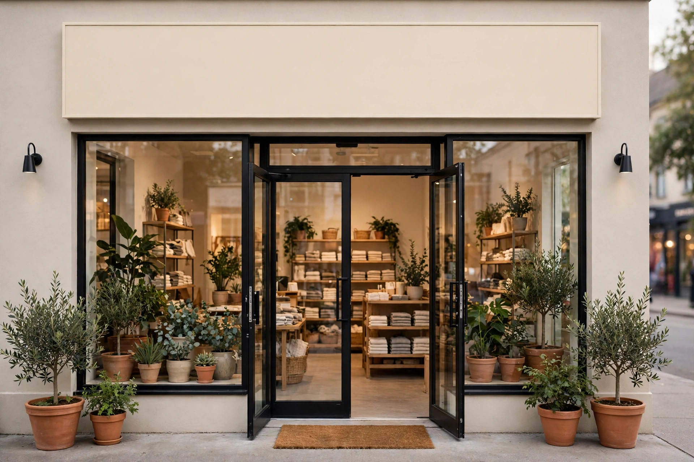

Give Clear Directions Before the Customer Leaves Home
Most first-time customers check a business online before they travel. They want a clear address, a phone number they can tap, and directions that actually lead to the right place. If your address is incomplete or your location on the map is wrong, a customer may arrive at the wrong street and give up. Take a few minutes to check your address on a map as a customer would, and correct anything that looks unclear or out of date.
It also helps to describe nearby landmarks in simple words, because many customers in Dera Ghazi Khan navigate by familiar places rather than by street numbers alone. Mention a nearby road, market, or well-known building, and explain whether the business is on a main road or inside a side street. This kind of plain guidance reduces confusion, especially for customers who are travelling from another part of the city or from a nearby village.
When directions are written, keep them short and in the order a traveller will use them. Start from a well-known point, then describe each turn simply, and finish with what the customer will see on arrival. Avoid long sentences and unnecessary detail, because a traveller reading directions on a phone needs clarity, not a story. If a customer still calls for help, note which part confused them and improve the wording, so the next visitor benefits from the lesson.
Make Contact Easy on the Day of the Visit
A customer who is on the way may need to call for a last-minute question, such as whether the business is open or whether a service is available that day. If the phone number is hard to find, or if calls go unanswered, the customer may turn back. Keep your phone number visible on your website and business profile, and make sure someone can answer politely during opening hours. A short, helpful reply can save a visit.
If you cannot answer a call at once, returning the call as soon as possible still helps. Customers understand that a small business can be busy, but they lose patience when a call is ignored completely. A simple habit of checking missed calls and replying the same day shows respect for the customer's time. It also gives you a chance to confirm directions, timings, or what the customer should bring, which makes the visit smoother for everyone.
Explain What the Customer Will Find on Arrival
New customers feel more comfortable when they know what to expect. Explain where to park or stop, which entrance to use, and who to ask for when they arrive. If your business is inside a larger building or market, say so clearly, because a customer searching through a busy area can easily feel lost. A short, honest description of the arrival removes worry and helps the customer walk in with confidence.
It is also useful to explain what the first visit will involve. Tell the customer whether they need an appointment, whether they should bring anything, and roughly how long a first consultation or service may take. Customers who know the steps in advance can plan their day better and are less likely to feel rushed or confused. Clear expectations turn a nervous first visit into a relaxed one.
Keep Opening Hours and Availability Honest
Nothing frustrates a first-time customer more than arriving to find a closed door. Keep your opening hours accurate everywhere customers may look, including your website and your business profile. If your hours change for a particular day, update the information early and tell customers who may be affected. Honest hours protect the customer's journey and protect your reputation at the same time.
Availability matters just as much as hours. If a service needs booking, say so, and explain how to book. If a product is sometimes out of stock, explain that stock can be checked by phone before travelling. Customers appreciate this honesty, because it lets them avoid a wasted trip. A business that gives accurate information about hours and availability earns trust before the customer even arrives.
Welcome the Customer Warmly at the Door
The first minute inside a business shapes the whole visit. Greet the customer politely, offer a clear place to wait if needed, and listen to what they came for before explaining the next step. A customer who feels welcomed is more likely to ask questions, understand the service, and return again. Rushing a new customer, or leaving them standing without guidance, creates a poor first impression that is hard to undo.
Good welcoming also means paying attention to the space itself. Keep the entrance clear, make sure signs are readable, and keep the area tidy. Customers notice these details, even if they do not mention them. A clean, organised entrance signals that the business cares about its customers. Combined with a friendly greeting, it makes a first visit feel easy rather than stressful, and it encourages the customer to stay and talk.
A warm welcome also includes explaining what happens next without the customer having to ask. Tell them where to sit, how long the wait may be, and what will happen when their turn comes. This simple guidance removes the awkward feeling of not knowing where to stand or whom to approach. When a new customer feels guided from the door onwards, the whole visit feels organised, and they are far more likely to return with confidence.

Follow Up After the First Visit
A short follow-up after a first visit can turn a new customer into a regular one. A polite call or message to check whether everything went well shows care and gives the customer a chance to ask a question they forgot during the visit. Keep the follow-up brief and helpful, and avoid pushing another sale in the same message. The purpose is to confirm satisfaction and leave a good final impression.
Follow-up also helps you learn what first-time customers found confusing. If several new customers ask the same question after visiting, your directions, signs, or online information may need a small improvement. Fixing these details makes the next first visit easier for someone else. Over time, this habit of listening and improving builds a steady flow of new customers who arrive confident, feel welcomed, and come back.
Frequently Asked Questions
Why do first visits matter so much for a local business?
A first visit shapes the customer's opinion, and a smooth experience makes them far more likely to return and recommend the business.
What information should a business check before a customer visits?
Check that the address, map location, phone number and opening hours are correct and easy to find online.
Should a business explain what happens during a first visit?
Yes, explaining the steps, what to bring and how long it may take helps customers plan and feel relaxed.
Does Zaheer Seo Expert have an office in Dera Ghazi Khan?
No, Zaheer Seo Expert is based in Layyah and has no office in Dera Ghazi Khan, but it helps businesses present clear online information.
Want More Customers From Google?
Call 0327 7350830 or email seozaheer14@gmail.com. Zaheer Seo Expert, Layyah - Rajan Shah Road, Rana Nagar, Chak 116 TDA, Pakistan. Open 24 hours.
Get Your SEO Strategy →